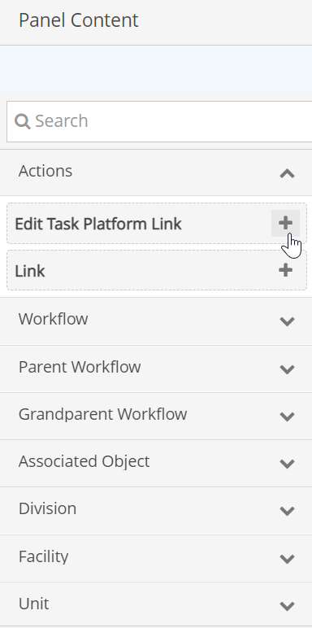
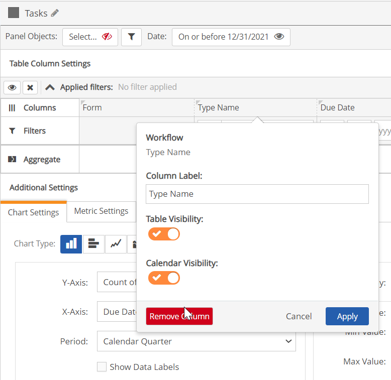

Depending on the panel type, certain default columns are shown in the table when the panel is initially added to the page. You may remove columns and add new columns to the panel display.
The Field Selector pane on the left in panel edit mode shows the fields that are available to add to the panel. The Search box at the top of the fields list will filter dynamically for all fields whose name contains the characters entered.
To edit column display:
The available columns are shown in the Field Selector pane on the left. If the pane is not visible (on a smaller screen), click the menu button top left to show it.

Click the + sign next to the field name to add it as the last column. It can be re-positioned then by drag and drop.
For convenience, you can remove all columns, then add just those you want. Click Clear Settings to remove all columns.

The Show User All Applicable Documents is only available to users who are in the Administrators group and members of the app role Portal Administrators.
Filters may be configured on the columns which may be hidden or be made available to users so they may edit them and apply their own filters to manipulate the data display.
See Column Filters.